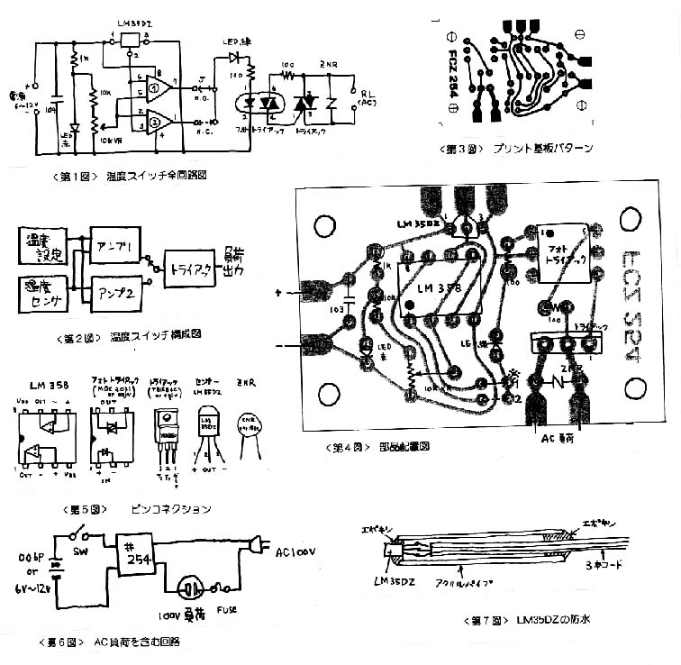

| ・戻る |
ナショナルセミコンダクターズ社製の温度センサIC
LM-35DZとSSRを組み合わせた温度スイッチです。
LM-35DZは2SC1815等と同じ大きさのＩＣです。 電源端子に電源をかければ、出力端子にそのときの温度に相当する電圧が出力されます。
その電圧は、 0℃で
0V、100℃で1Vと言う実に分かりやすい物です。したがってこの電圧をmV単位でデジタルテスターで計り一桁ずらして読めば特別な回路なしでデジタル
温度計になります。
ここではこのICセンサをソリッドステートリレーに組み合わせてAC回路を直接ON/OFFする回路を作ります。
第1図にその全回路図を示します。
LM358はデュアルオペアンプ（オペアンプが二つ入った）のICです。 回路構成は第2図の通りで、LM35DZの温度出力電圧と、温度設定電圧（基
準電圧）をLM358で比較します(コンパレータ回路)。 基準電圧としてはLEDを定電圧素子として使い、この電圧を10kΩの抵抗と10kΩの半固定
抵抗で分圧します。 この定数のままで大体、5〜95℃の温度設定ができます。
Amp-1ではLM35DZの出力のほうが高い電圧を示したとき、LM358の出力回路に電圧が生じSSRをONとします。 また、Amp-2では設定
温度より上に上がった時OFFになるように設計してあります。Amp-1を使うかAmp-2を使うかあらかじめ配線で選択しておいてください。 以後の説
明はAmp-1を選択したとしてすすめることにします。
|  |
第3図にプリント基板のパターン、第４図に実体配線図、第5図に各素子のピンコネクションを示しま
す。
AC関係負荷を含む回路は第6図のように配線します。ここでは100Vの商業線を使いますので感電やショートによる事故がないように細心の注意をして作
業すると共に必ず適当なケースに入れて使用してください。
赤のLEDは電源表示であり、緑のLEDはSSRがONとなった表示です。
使い方は簡単で、半固定抵抗を調整して実際の温度条件で温度設定をします。
また、LM358の6番ピンの電圧をmV単位で計り、それを10で割った数字が設定温度になりますから、この電圧を計って温度設定をする事もできます。
ただし、この方法は、電圧計の内部抵抗による測定誤差が生じやすいので、内部抵抗の高いディジタル電圧計を使う等、十分気をつけてください。
温度スイッチの感度は0.1℃の単位でよく働いてくれます。
電源電圧は5Ｖから12Vの範囲で御使用下さい。
(1) 消費電流はSSR動作時、12V で20mA。非動作時で10mAです。
(2) LM35DZを100℃以上の雰囲気に置かないで下さい。
(3) AC/100Vを使用しますので必ずケースの中に収納し、ACラインには必ずヒューズを取り付けるようにしてください。
(4) AC100Vを扱うため、ショート、感電にはくれぐれも注意してください。
(1) お風呂の温度監視等に使いたいときは第7図に示すような防水処理を施してください。
(2) 温度設定を頻繁に変えたいときには、VRを10kΩ(B)型ボリュームと交換すると便利です。
(3) この回路に使っているトライアックは最大規格16A迄使うことが出来ますが、大きな電流をON/OFFしたい時にはトライアックを基板からはず
し、金属ケースか専用の放熱噐に取り付けてからあらためて基板との間を配線してください。